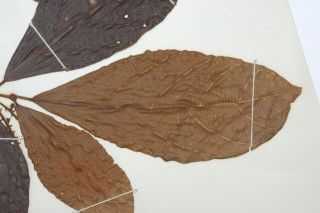
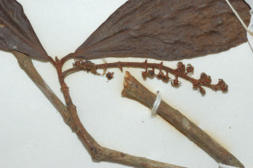
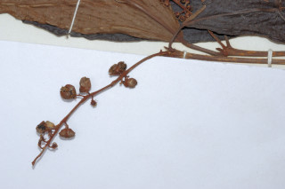
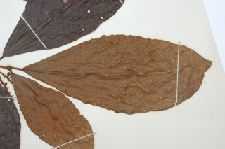
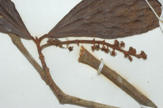
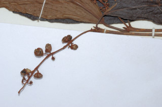

Trees up to 8 m tall.
8 ಮೀ. ಎತ್ತರದವರೆಗೆ ಬೆಳೆಯುವ ಮರಗಳು.
8 മീറ്റര് വരെ ഉയരമുളള മരങ്ങള്.
மரங்கள் 8மீ. வரை வளரக்கூடியது
Branchlets terete, glabrous.
ಕಿರುಕೊಂಬೆಗಳು ದುಂಡಾಗಿದ್ದು ರೋಮರಹಿತವಾಗಿರುತ್ತವೆ.
അരോമിലമായ, ഉരുണ്ട ഉപശാഖകള്.
சிறிய நுனிக்கிளைகள் குறுக்குவெட்டுத் தோற்றத்தில் வளையமானது, உரோமங்களற்றது.
Leaves simple, with opposite, decussate, unequal pairs; petiole 0.3-2 cm, canaliculate; lamina 6-14.5 x 2.5-6 cm, elliptic to obovate, acute to shortly acuminate, base acute, margin entire or distantly dentate, glabrous, densely resinous yellow glandular beneath; secondary_nerves 7-9 pairs, basal pair short and opposite.
ಎಲೆಗಳು ಸರಳವಾಗಿದ್ದು ಅಭಿಮುಖ – ಕತ್ತರಿಯಾಕಾರದ ಜೋಡನಾ ವ್ಯವಸ್ಥೆಯಲ್ಲಿದ್ದು ಅಸಮ ಜೋಡಿಗಳನ್ನೊಳಗೊಂಡಿರುತ್ತವೆ; ತೊಟ್ಟುಗಳು 0.3-2 ಸೆಂ.ಮೀ.ಉದ್ದವಿದ್ದು ಕಾಲುವೆಗೆರೆ ಸಮೇತ ಇರುತ್ತವೆ; ಪತ್ರಗಳು 6 -14.5 X 2.5 – 6 ಸೆಂ. ಮೀ. ಗಾತ್ರ, ಅಂಡವೃತ್ತದಿಂದ ಬುಗುರಿವರೆಗಿನ ಆಕಾರ ಹೊಂದಿರುತ್ತವೆ;ಪತ್ರಗಳ ತುದಿ ಚೂಪಾದುದರಿಂದ ಕಿರಿದಾದ ಕ್ರಮೇಣವಾಗಿ ಚೂಪಾಗುವ ಮಾದರಿಯಲ್ಲಿ ಇರುತ್ತದೆ; ಬುಡ ಚೂಪಾಗಿರುತ್ತದೆ;ಅಂಚು ನಯವಾಗಿರುತ್ತದೆ ಅಥವಾ ಅಂತರವುಳ್ಳ ದಂತಿತ ಮಾದರಿಯಲ್ಲಿ ಇರುತ್ತವೆ; ಮೇಲ್ಮೈ ರೋಮರಹಿತವಾಗಿರುತ್ತದೆ ಮತ್ತು ತಳಭಾಗದಲ್ಲಿ ದಟ್ಟವಾದ ಹಳದಿ ಬಣ್ಣದ ಅಂಟು ರಸ ಗ್ರಂಥಿಗಳು ಇರುತ್ತವೆ;ಎರಡನೇ ದರ್ಜೆಯ ನಾಳಗಳು 7 ರಿಂದ 9 ಜೋಡಿಗಳಿರುತ್ತವೆ, ಬುಡದಲ್ಲಿನ ಜೋಡಿಗಳು ಕಿರಿದಾಗಿರುತ್ತವೆ ಮತ್ತು ಅಭಿಮುಖಿಗಳಾಗಿರುತ್ತವೆ.
ലഘുവായ ഇലകള്, സമ്മുഖ, ഡെക്കുസേറ്റ് ക്രമത്തില് അസമ ജോഡികളായി കാണുന്നു; ചാലുളള ഇലഞെട്ടിന് 0.3 സെ.മീ മുതല് 2 സെ.മീ വരെ നീളം; പത്രഫലകത്തിന് 6 സെ.മീ മുതല് 14.5 സെ.മീ വരെ നീളവും 2.5 സെ.മീ മുതല് 6 സെ.മീ വരെ വീതിയും, ആകൃതി ദീര്ഘവൃത്തംതൊട്ട് അപഅണ്ഡാകാരം വരെയാകാം, പത്രാഗ്രം നിശിതം തൊട്ട് ചെറുദീര്ഘാഗ്രമോ ആവാം, പത്രാധാരം നിശിതമാണ്, അരികുകള് അവിഭജിതമോ വിദൂരമായി ദന്തിതമോ ആണ്, അരോമിലം, കീഴെ കൊഴുത്ത മഞ്ഞസ്രവമുളള ഗ്രന്ഥികള് കനത്തില് നിറഞ്ഞതാണ്; കീഴെയുളള ജോഡികള് ചെറുതും സമ്മുഖവുമായ, 7 മുതല് 9 വരെ ജോഡി ദ്വിതീയ ഞരമ്പുകള്.
இலைகள் தனித்தவை, எதிரடுக்கமானவை, குறுக்குமறுக்குமானவை, எதிராக அமைந்த ஜோடி இலைகள் சமமற்றவை; இலைக்காம்பு 0.3-2 செ.மீ., குறுக்குவெட்டுத் தோற்றத்தில் கேனாலிகுலேட்; இலை அலகு 6-14.5 x 2.5-6 செ.மீ., நீள்வட்டம் முதல் தலைகீழ் முட்டை வடிவம், அலகின் நுனி கூரியது முதல் சிறிய அதிக்கூரியது, அலகின் தளம் கூரியது, அலகின் விளிம்பு முழுமையானது அல்லது ஆங்காங்கே பற்களுடையது, உரோமங்களற்றது, அடர்த்தியாக ரெசின் கொண்ட மஞ்சள் நிறமான சுரப்பிகளை இலையின் அடிப்புறத்திலுடையது; இரண்டாம் நிலை நரம்புகள் 7-9 ஜோடிகள், தளத்திலுள்ள ஓர் ஜோடி நரம்பு சிறியது மற்றும் எதிரானவை.
Flowers unisexual; inflorescence slender racemes, to 10 cm long, pedicels 0.5 cm long.
ಹೂಗಳು ಏಕಲಿಂಗಿಗಳಾಗಿರುತ್ತವೆ; ಪುಷ್ಪಮಂಜರಿ ಮಧ್ಯಾಭಿಸರ ಮಾದರಿಯಲ್ಲಿದ್ದು ತೆಳುವಾಗಿರುತ್ತವೆ ಮತ್ತು 10 ಸೆಂ.ಮೀ.ಉದ್ದ ಹೊಂದಿರುತ್ತವೆ;ಹೂ ತೊಟ್ಟುಗಳು 0.5 ಸೆಂ. ಮೀ. ಉದ್ದವಿರುತ್ತವೆ.
പൂക്കള് ഏകലിംഗികളാണ്; പൂങ്കുലകള് 10 സെ.മീ വരെ നീളമുളള നേര്ത്ത റസീമുകളാണ്, പൂഞെട്ടുകള്ക്ക് 0.5 സെ.മീ നീളം.
மலர்கள் ஓர்பாலானவை; மஞ்சரி மெல்லிய ரெசீம், 10 செ.மீ. நீளமானது, மலர்காம்பு 0.5 செ.மீ. நீளமானது.
Capsule 2-lobed, smooth, glandular; seeds 1 per lobe.
ಸಂಪುಟ ಫಲಗಳು 2-ಹಾಲೆಗಳನ್ನು ಹೊಂದಿದ್ದು, ನಯವಾಗಿರುತ್ತವೆ ಮತ್ತು ರಸಗ್ರಂಥಿಗಳ ಸಮೇತವಿರುತ್ತವೆ ಹಾಗೂ ಪ್ರತಿ ಹಾಲೆಯಲ್ಲಿ ಒಂದು ಬೀಜವನ್ನು ಹೊಂದಿರುತ್ತವೆ.
ഓരോ ഭാഗത്തും ഓരോ വിത്തുവീതമുളള, ഗ്രന്ഥികളുളള മിനുസമാര്ന്ന, കായ 2 ഭാഗങ്ങളുളള കാപ്സ്യൂള് ആണ്.
வெடிகனி (கேப்சூல்), 2-அறைகளுடையது, வழுவழுப்பானது, சுரப்பிகளுடையது; விதைகள் ஓர் அறையில் ஒன்று.

 




